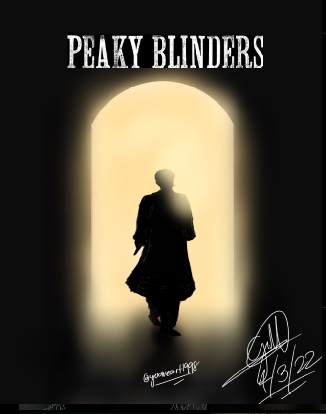

Hi, Gillian Here.
Welcome to my art gallery and my personal website for art-related basis.
ABOUT ME
As a student, I also worked as a professional artist. I started drawing at a very young age to pursue my passion for making different projects through art as I allow myself. So here is my interactive website of my artworks in this portfolio website.
1. The Mandalorian

This iconic art was made in 2021. I got the inspiration from Pinterest and Google to make them more minimal.
2. Game Of Thrones X Chess

Another Iconic artworks with Game of Thrones collaboration with my character as a house lannister in Game of Thrones series.
3. Erwin Smith - Attack On Titan

An Iconic Erwin Smith and his younger self as a commander of Survey corps.
The Bonus sketches.
Basically, the bonus sketches are more on manual drawings. They're focused more on ink sketches of any character's drawings.
Iskandar - Fate series

Iskandar or The rider from the Fate series. He's one of my favorite characters ever since when I started watching the Fate series anime.
Sub Zero - Mortal Kombat series

One of the other iconic artworks in the bonus sketches page. Sub Zero aka Kuai LLiang from the deadly warrior clan which is the Lin kuei.
Scorpion - Mortal Kombat series.

Another original artwork from the mortal kombat series. Scorpion aka Hanzo Hasashi is one of the strongest in the warrior clan which is the Shrai ryu clan.
Silhuotte artworks
Here are the artworks that is way minimal and way simple.
Jon Snow - Game of thrones

Jon snow amd Ghost. One of my favorite characters in Game of Thrones series.
Moon-Venus minimalist art

ANother iconic minimal artwork. Which is basically the moon venus that happened last year in the mid spring.
The lone samurai - original artwork

One of my iconic minimal artworks which is made by me. However, they are not from any series, they are just an inspirational artwork and original artwork.
Thomas shelby - Peaky Blinders
One of the minimal artworks but look realistic in scene. Thomas shelby from the peaky blinders series.
Instagram accounts
Here are my art accounts where i posted them
- @cosm_ink00
- @dwnscrpnx
- silentwolf_art05 - Gillian's sketchbook